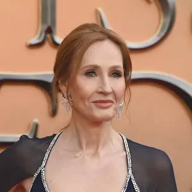

J. K. Rowling
Joanne Rowling born 31 July 1965), better known by her pen name J. K. Rowling, is a British author and philanthropist. She wrote Harry Potter, a seven-volume fantasy series published from 1997 to 2007. The series has sold over 600 million copies, been translated into 84 languages, and spawned a global media franchise including films and video games. The Casual Vacancy (2012) was her first novel for adults. She writes Cormoran Strike, an ongoing crime fiction series, under the alias Robert Galbraith.
Peter Jackson
Sir Peter Robert Jackson ONZ KNZM is a New Zealand film director, screenwriter and producer. He is best known as the director, writer and producer of the Lord of the Rings trilogy and the Hobbit trilogy, both of which are adapted from the novels of the same name by J. R. R. Tolkien.
Harper Lee

Nelle Harper Lee (April 28, 1926 – February 19, 2016) was an American novelist whose 1960 novel To Kill a Mockingbird won the 1961 Pulitzer Prize and became a classic of modern American literature. She assisted her close friend Truman Capote in his research for the book In Cold Blood (1966).[1] Her second and final novel, Go Set a Watchman, was an earlier draft of Mockingbird that was published in July 2015 as a sequel.